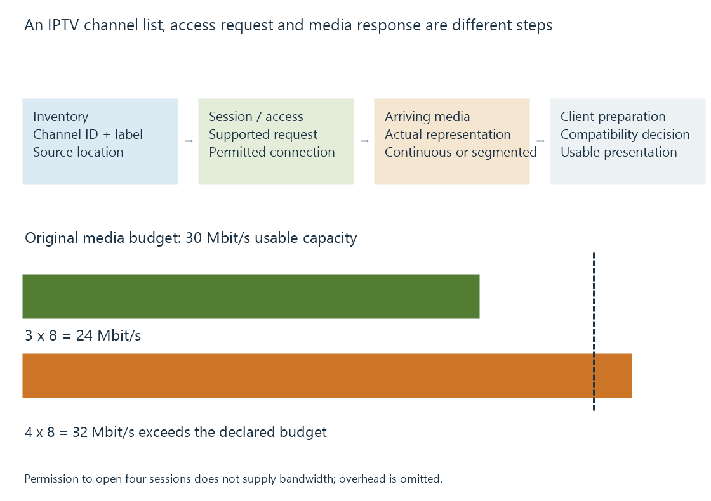

IPTV and internet-delivered live channels
IPTV delivers television services through IP networks, with channel discovery, session access and media transport determining the stream a playback system can acquire.
IPTV uses Internet Protocol networks to deliver television services. The term does not name a single codec, container or channel-list format.
ITU-T describes an IPTV service framework with defined network/service requirements. In everyday media-server discussion, “IPTV” is also used more broadly for live channels supplied through internet-accessible stream URLs. The actual delivery arrangement is the useful technical description.
Finding a channel and receiving its media differ
| Layer | Question |
|---|---|
| Channel discovery/list | Which service is available, and how is it addressed? |
| Access/session | Can this client/server establish the provider’s supported request? |
| Transport/packaging | Continuous stream, segments or another implemented route? |
| Media representation | Which encoded video/audio tracks are present? |
| Playback preparation | What can the chosen Emby client consume? |
A readable channel list can succeed while the subsequent stream request fails. A successful connection can also return an error page rather than usable media.
An HTTP status and the returned payload answer different parts of the request.

Permitted sessions still need transport capacity
Consider an original network exercise with four channel streams at eight Mbit/s each:
4 × 8 = 32 Mbit/s of media payload
If the declared usable path budget is thirty Mbit/s, the unchanged streams cannot all fit continuously, even if the provider permits four sessions.
Three such streams need twenty-four Mbit/s and leave six under this simplified budget. Actual overhead and time-varying rates need additional accounting.
Connection limits concerns a different constraint from bitrate. Lowering client-facing video bitrate after server conversion does not necessarily reduce the original provider stream entering the server.
A channel list is not a media timeline
An extended M3U channel list can associate names and identifiers with source URLs. The URL can lead to another representation, such as an HLS playlist.
An HLS media playlist describes segments and their sequence for one presentation. The fact that both kinds of text use related playlist notation does not make their entries have the same meaning.
Extended M3U lists develops the channel attributes used by an Emby source. The provider’s actual access and stream requirements remain separate.
The receiving location matters
When Emby Server acquires the source, its route to the provider supplies the incoming media. The client’s route to Emby is another connection.
A stream that works directly in one app does not prove the server uses the same network path, request context or supported protection arrangement.
See Also
- Extended M3U channel lists
- IPTV connection limits
- HTTP Live Streaming (HLS)
- MPEG-DASH and its media presentation description